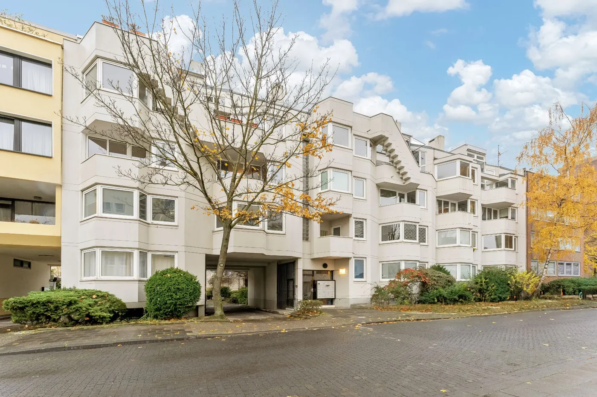
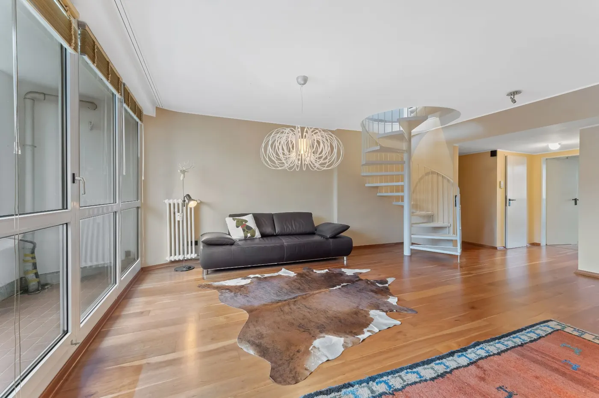
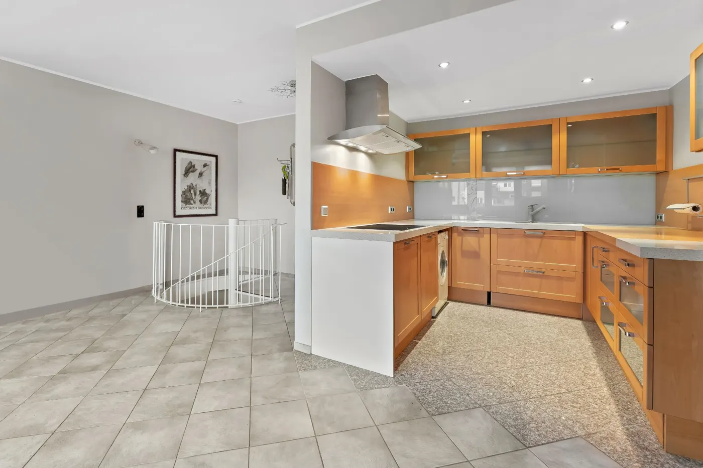

Immobilienmakler Köln Sülz & Immobilienbewertung
IHK-zertifiziert | Partner-Netzwerk | 5,0 ★ auf Google
Immobilie in Sülz verkaufen oder eine Wohnung in Köln-Sülz kaufen? Ich bin Roman Becker, wohne selbst im Viertel und kenne die Sülzburgstraße, den Beethovenpark und jede Seitenstraße aus dem täglichen Leben. Was das für Sie bedeutet: realistische Preiseinschätzung, Zugang zu einem großen Käuferpool und ein Makler, der in fünf Minuten bei Ihnen vor der Tür steht.
Jetzt Ihre Immobilie online bewerten lassen – kostenlos und unverbindlich.

Mein Sülz — Roman Becker persönlich
Leben im Veedel
Ich wohne mit meiner Familie in Sülz, unsere Kinder gehen auf die KGS (GGS) „ums Eck" und meine Frau arbeitet als Kinderzahnärztin am Heumarkt. Einkaufen, Sport und Abendunterhaltung passiert bei uns alles im Veedel. „Makler aus der Nachbarschaft" ist unser Slogan, dieser wird auch gelebt!
Sülz für Familien mit Pänz
Für Familien mit Pänz bietet Sülz beste Möglichkeiten. Der Spielplatz am De-Noel Platz bietet den meisten Schatten für die heißen Sommertage. In der städtischen Musikschule in der Lotharstraße und im Little Gym können die Pänz unter fachmännischer Anleitung tanzen, singen und turnen.
Das kulinarische Sülz
Das Balthasar bietet besten Mittagstisch, abends lädt der Biergarten im Unkelbach zum Kölsch ein. Die Sülzburgstraße hat direkt zwei Metzgereien und im Heilandt gibt es den besten Zitronenkuchen der Stadt. Und Kaffee. Richtig guten Kaffee. Richtig gut ist auch das vermutlich beste Eis der Stadt: Das Keiserlich ist beim sommerlichen Veedel-Bummel der MUST-STOP auf jedem Heimweg. Deli, Chang Thai und viele viele weitere Locations machen das kulinarische Angebot rund. Sollte Ihr favorisiertes Restaurant, Brauhaus oder Bar nicht aufgezählt sein: Schicken Sie mir gerne eine Nachricht!
Köln-Sülz – urban, grün, familienfreundlich
Sülz ist der fünftgrößte Kölner Stadtteil mit rund 36.700 Einwohnern und liegt im Stadtbezirk Lindenthal. Die Mischung macht das Viertel besonders: Studierende der nahen Universität zu Köln, junge Familien und etablierte Berufstätige leben hier Tür an Tür. Mit einer Arbeitslosenquote von 4,3 % (Kölner Schnitt: 8,8 %) gehört Sülz zu den wirtschaftlich stärksten Vierteln der Stadt.
Die Berrenrather Straße ist das Herzstück des Viertels – einer der 14 offiziellen Shopping-Hotspots Kölns mit Einzelhandel, Cafés und Restaurants. Wer es ruhiger mag, findet im Beethovenpark oder am Decksteiner Weiher Erholung: 26,4 % der Stadtteilfläche sind Grün- und Erholungsflächen.
Sülz gehört neben Nippes zu den kinderreichsten Stadtteilen Deutschlands. Drei Gymnasien, 18 Kitas mit knapp 1.000 Plätzen und die direkte Anbindung an die Uniklinik Köln machen den Stadtteil für Familien besonders attraktiv. Was Sülz nicht ist: ein ruhiges Vorstadtviertel. Parkplätze sind knapp bis nicht vorhanden, die Nachfrage nach Wohnraum übersteigt das Angebot seit Jahren und treibt die Preise. Wer vom Beethovenpark und der Berrenrather Straße schwärmt, muss wissen: Sülz ist beliebt — und das hat einen Preis.

PLZ: 50937, 50935, 50939 · Bezirk Lindenthal
Verkauft in Sülz: Maisonette-Wohnung aus dem Jahr 1969
Eine Maisonette mit drei bis vier Zimmern, die ich gemeinsam mit einer Kollegin verkauft habe.



- 100 m²Wohnfläche
- 1969Baujahr
- 4,5 MonateAuftrag bis Notar
- 1Balkon
Ausgangssituation
- Maisonette, Haus mit Aufzug.
- Energieeffizienzklasse F, Ölheizung von 2014.
Was ich gemacht habe
- Unterlagen zusammengestellt: Energieausweis, Abrechnungen, Wirtschaftsplan, Protokolle der Eigentümerversammlungen.
- Wohnflächenberechnung und Exposé erstellt.
- Eigentümerin mit Vermarktungsupdates informiert und den Angebotspreis gemeinsam angepasst.
- Kaufabsichtserklärung, Notartermin und Übergabe organisiert.
Zeitstrahl
- Präsentation, Maklerauftrag unterschrieben
- Exposé
- Anpassung des Angebotspreises
- Kaufabsichtserklärung, Beurkundung beim Notar
- Übergabe
Ergebnis: Viereinhalb Monate nach dem Auftrag war die Wohnung beurkundet. Nach der Anpassung des Angebotspreises ging es schnell: Zwischen Kaufabsichtserklärung und Notartermin lagen zwei Wochen.
Fazit: Ein Preis ist am Anfang eine Annahme. Zeigt der Markt etwas anderes, sollte man das offen besprechen, statt Monate zu verlieren.
Sie möchten in Sülz verkaufen? → Sprechen Sie mich an
Verkaufte Immobilien in Sülz
Über das Netzwerk verkaufte Immobilien der letzten drei Jahre (Auswahl).
- Grafenwerthstraße (Haus)
- Zülpicher Straße (Wohnung, 3 Einheiten)
- Remigiusstraße (Wohnung)
- Lindenthalgürtel (Haus)
verkaufte Objekte in Sülz
Alle Straßen in Köln-Sülz
Sie besitzen eine Immobilie in einer dieser 114 Straßen in Sülz? Ein Klick auf den Straßennamen startet Ihre kostenlose Online-Bewertung mit vorausgefüllter Adresse – oder zeigen Sie die Lage mit 📍 direkt auf der Karte.
Straßenverzeichnis Sülz anzeigen (114 Straßen)
- Aegidienberger Str.
- Ägidiusstr.
- Am Beethovenpark
- Am Justizzentrum
- Am Krieler Dom
- Am Neuenhof
- Anton-Antweiler-Str.
- Arnulfstr.
- Asbergplatz
- Asbergstr.
- Auerbachplatz
- Berrenrather Str.
- Birkenfelder Str.
- Blankenheimer Str.
- Brunkensteinstr.
- Castellauner Str.
- Curtiusstr.
- Dauner Str.
- De-Noël-Platz
- Düstemichstr.
- Einhardstr.
- Elisabeth-von-Mumm-Platz
- Elzstr.
- Emmastr.
- Enrique-Schmidt-Cuadra-Weg
- Erpeler Str.
- Euskirchener Str.
- Franz-Kremer-Allee
- Friedrich-Engels-Str.
- Fustenburgstr.
- Gerolsteiner Str.
- Gleueler Str.
- Goldenfelsstr.
- Gottesweg
- Grafenwerthstr.
- Greinstr.
- Guldenbachstr.
- Gustavstr.
- Hans-Carl-Nipperdey-Str.
- Hans-Groß-Park
- Hans-Mayer-Weg
- Hellenthaler Str.
- Hermeskeiler Platz
- Hermeskeiler Str.
- Himmerichstr.
- Hirzstr.
- Hochwaldstr.
- Hollerather Str.
- Hummelsbergstr.
- In der Beller Maar
- Jünkerather Str.
- Kaisersescher Str.
- Kempfelder Str.
- Kirchberger Str.
- Kleingarten-Kolonie Sülz
- Konradstr.
- Koppensteinstr.
- Kyllburger Str.
- Lechenicher Str.
- Lew-Kopelew-Weg
- Leybergstr.
- Lieserstr.
- Linzer Str.
- Lotharstr.
- Luxemburger Str.
- Manderscheider Platz
- Manderscheider Str.
- Marsiliusstr.
- Mayener Str.
- Militärringstr.
- Mommsenstr.
- Morbacher Str.
- Münstereifeler Platz
- Münstereifeler Str.
- Neuenhöfer Allee
- Niebuhrstr.
- Nikolausplatz
- Nikolausstr.
- Nonnenwerthstr.
- Nürburgstr.
- Olefstr.
- Palanterstr.
- Paul-Schallück-Str.
- Platz der Kinderrechte
- Rankestr.
- Raumerstr.
- Redwitzstr.
- Remigiusstr.
- Rennebergstr.
- Rheinbacher Str.
- Rhöndorfer Str.
- Rodderbergstr.
- Rolandswerther Str.
- Rudolf-Amelunxen-Str.
- Rupprechtstr.
- Scherfginstr.
- Schleidener Str.
- Schmitburgstr.
- Simmerer Str.
- Speestr.
- Sülzburgstr.
- Sülzer Aquarienweg
- Sülzgürtel
- Universitätsstr.
- Unkeler Str.
- Urftstr.
- Weißhausstr.
- Weyertal
- Wichterichstr.
- Wildenburgstr.
- Wilhelm-Waldeyer-Str.
- Wittekindstr.
- Wolbersstr.
- Zülpicher Str.
Quelle: Stadt Köln, Kölner Straßenverzeichnis, Stand 01.04.2026 (Datenlizenz Deutschland Namensnennung 2.0).
Haus oder Wohnung in Köln-Sülz kaufen oder verkaufen – aktuelle Marktdaten
Wer in Sülz eine Immobilie verkaufen möchte, profitiert von der anhaltend hohen Nachfrage: Die Wohnungspreise sind von 2020 bis 2024 um rund 11 % gestiegen. Käufer finden hier ein Viertel mit exzellenter Infrastruktur, das seinen Wert langfristig hält. Als Immobilienmakler Köln Sülz berate ich Sie zu beiden Seiten — fundiert und marktgerecht.
Eigentumswohnung
Haus (Reihenmittelhaus)
Dreifamilienhaus
Stadtbezirk Lindenthal
Mehrfamilienhaus
Stadtbezirk Lindenthal
Berichtszeitraum 2025 · Quelle: Grundstücksmarktbericht 2026 für die Stadt Köln. Eigentumswohnungen: Kapitel 6.1 (Weiterverkauf). Häuser: Kapitel 5.1.2. Drei- und Mehrfamilienhäuser: Kapitel 5.2. Diese beiden Werte weist der Bericht nur für den gesamten Stadtbezirk Lindenthal aus, nicht für den einzelnen Stadtteil.
Bodenrichtwert Köln-Sülz
Sülz ist ein begehrter Familienstadtteil im Stadtbezirk Lindenthal — Nähe zur Uni, ruhige Wohnstraßen und gute Schulen sichern hohe Bodenwerte. Der aktuelle Bodenrichtwert für Köln-Sülz liegt laut BORIS NRW bei 1.430–2.610 €/m² (amtlicher Stichtag 01.01.2026) — Tendenz stabil →.
Der Bodenrichtwert gibt den durchschnittlichen Lagewert eines Grundstücks pro Quadratmeter an und ist ein zentraler Faktor bei der Immobilienbewertung. Er beeinflusst Kaufpreis, Erbschaftssteuer und Grundsteuer. Für eine individuelle Wertermittlung Ihrer Immobilie in Köln-Sülz stehe ich Ihnen gerne persönlich zur Verfügung.
Alle Bodenrichtwerte Köln & Umland im Überblick → BORIS NRW direkt öffnen →Wohnungspreise in Köln-Sülz von 2015 bis 2024
Mittlerer Kaufpreis für Eigentumswohnungen mit 60 bis 100 m² Wohnfläche laut Gutachterausschuss Köln: 3.237 €/m² im Jahr 2015, 5.015 €/m² im Jahr 2024. Das sind +55 %.
Quelle: Gutachterausschuss
Wird in Köln-Sülz überhaupt gehandelt?
Preise sagen, was eine Immobilie wert ist – nicht, ob sie sich verkaufen lässt. Dafür lohnt der Blick in den Grundstücksmarktbericht des Gutachterausschusses für Grundstückswerte in der Stadt Köln. Er wertet als einzige amtliche Quelle die tatsächlich notariell beurkundeten Kaufverträge aus, nicht Angebotspreise.
| Berichtsjahr 2025 | Kaufverträge | Geldumsatz | Ø je Vertrag |
|---|---|---|---|
| Stadtbezirk 3 – Lindenthal | 1.312 | 874,1 Mio. € | 666.199 € |
| Köln gesamt | 7.831 | 5.682,4 Mio. € | 725.632 € |
Köln-Sülz liegt im Stadtbezirk 3 – Lindenthal. Dieser verzeichnet die meisten Kaufverträge aller neun Bezirke – mehr als die Innenstadt.
Stadtweit stieg die Zahl der Kaufverträge 2025 um 8 % auf 7.831, der Geldumsatz um 21 % auf rund 5,68 Milliarden Euro. Für Eigentümer ist das die eigentlich relevante Größe: Ein hoher Preis nützt wenig, wenn kein Käufer da ist.
Quelle: Grundstücksmarktbericht 2026 für die Stadt Köln, Kapitel 3.1, Berichtsjahr 2025. Die Zahlen gelten für den gesamten Stadtbezirk 3, zu dem neben Köln-Sülz auch Klettenberg, Lindenthal, Braunsfeld, Müngersdorf, Junkersdorf, Weiden, Lövenich, Widdersdorf gehören – nicht für Köln-Sülz allein. Der Ø-Wert je Vertrag umfasst alle Teilmärkte, also auch unbebaute Grundstücke, Teileigentum und Erbbaurechte.
Das macht Sülz als Wohnlage attraktiv
Gute Infrastruktur steigert den Wert Ihrer Immobilie. Sülz punktet mit kurzen Wegen, exzellenten Schulen und viel Grün.
Schulen & Bildung
- Elisabeth-von-Thüringen-Gymnasium
- Schiller-Gymnasium (mit Volkssternwarte)
- Hildegard-von-Bingen-Gymnasium
- Gesamtschule Lindenthal
- St. George's School (Husarenstr., außerhalb von Sülz)
- GGS Manderscheider Platz
- KGS Berrenrather Straße
- GGS Mommsenstraße
- Heliosschule (Primarstufe)
Kitas & Kinderbetreuung
- 18 Kindertagesstätten
- 998 Betreuungsplätze
- Städtische, kirchliche & freie Träger
- Elterninitiativen (Sülzbande e.V. u.a.)
ÖPNV-Anbindung
- Linie 9 (Richtung Königsforst)
- Linie 13 (Sülzgürtel)
- Linie 18 (Richtung Brühl/Bonn)
- Buslinien 130, 131, 134, 142
- A4 über Militärringstraße
Einkaufen
- Sülzburgstraße (Shopping-Hotspot im Veedel)
- Berrenrather Straße (14 offizielle Shopping-Hotspots Kölns)
- REWE, EDEKA, Alnatura, ALDI SÜD
- Casaretto Feinkost, dm, Rossmann
- ISK Carré Sülz-Klettenberg (Veedels-Verein)
Parks & Freizeit
- Beethovenpark (großer Landschaftspark)
- Decksteiner Weiher (20 ha)
- Äußerer Grüngürtel
- Stadionbad (nahegelegen, Müngersdorf)
- Geißbockheim (1. FC Köln)
Gesundheit
- Uniklinik Köln (direkt angrenzend)
- 1.511 Betten, Maximalversorgung
- 24/7 Notaufnahme
- Zahlreiche Haus- & Fachärzte
Fitness & Sport
- Fitness First (Luxemburger Str. 253)
- McFIT Köln-Sülz
- ai fitness Köln-Sülz (Weißhausstr.)
- Fit im Salon (Sülzgürtel 27)
Gastronomie
- Brasserie Marie (französisch)
- Gasthaus Scherz (österreichisch)
- Bisù (italienische Tapas)
- Down To Earth Noodles (tibetisch)
- Sophias Restaurant (griechisch)
- Balthasar (Frühstück & Brunch)
- Café Wo ist Tom?, Café Osterspey
Kultur & Sehenswertes
- Weißhaus (historisches Wasserschloss)
- Weißhauskino (Programmkino)
- St. Nikolaus Kirche (1903, 53 m Turm)
- Volkssternwarte Köln
- Geusenfriedhof (seit 1576)
Immobilie verkaufen in Sülz – was Ihr Objekt besonders macht
Typische Objekte im Stadtteil
- Gründerzeit-Altbauten und Backsteinhäuser (frühes 20. Jh.) — besonders gefragt an der Berrenrather Straße und rund um den Nikolausplatz
- Genossenschaftswohnungen (GAG, GRUBO, GWG, Grundstein) mit begrünten Innenhöfen
- Loftwohnungen in ehemaligen Fabrikgebäuden
- Gartenstadtsiedlungen im westlichen Teil Richtung Klettenberg
- Moderne Neubauwohnungen und Luxuswohnanlagen
- Mehrfamilienhäuser als Kapitalanlage (Uni-Nähe = niedrige Leerstandsquote)
- Uni-Center an der Luxemburger Straße — eines der größten Wohnhäuser Europas
Immobilie in Köln-Sülz kaufen — für wen lohnt es sich?
Für Familien: Sülz gehört zu den kinderreichsten Stadtteilen Deutschlands. Drei Gymnasien, 18 Kitas und der Beethovenpark vor der Tür — wer hier eine Wohnung mit Balkon oder ein Reihenhaus findet, bleibt in der Regel langfristig.
Für Kapitalanleger: Die Nähe zur Universität zu Köln sorgt für konstante Mietnachfrage. Mehrfamilienhäuser und Eigentumswohnungen von im Mittel 5.055 €/m² bieten solide Renditen bei minimalem Leerstandsrisiko.
Für Eigennutzer: Altbaucharme, kurze Wege und ein Viertel, das sich anfühlt wie ein Dorf in der Großstadt. Die Sülzburgstraße mit ihren Cafés und Läden ist das Wohnzimmer des Viertels.
Über den Käuferpool spreche ich vorgemerkte, bonitätsgeprüfte Interessenten direkt an, die gezielt in Sülz suchen. Das verkürzt die Vermarktungsdauer und sichert Ihnen einen marktgerechten Preis.
Häufige Fragen zum Immobilienmarkt in Köln-Sülz
Was kostet eine Eigentumswohnung in Köln-Sülz?
Wie lange dauert es, eine Immobilie in Sülz zu verkaufen?
Lohnt sich eine Immobilie in Köln-Sülz als Kapitalanlage?
Warum ist Köln-Sülz bei Käufern so beliebt?
Brauche ich einen Makler für den Verkauf in Köln-Sülz?
Immobilie in Köln-Sülz verkaufen oder kaufen?
Ob Verkauf, Kauf oder Kapitalanlage — ich berate Sie persönlich, unverbindlich und diskret. Als Ihr Nachbar in Sülz kenne ich den Markt aus erster Hand.
Immobilienmakler Köln Sülz und Umgebung
Sie suchen einen Makler in einem angrenzenden Stadtteil? Ich bin auch hier für Sie da: